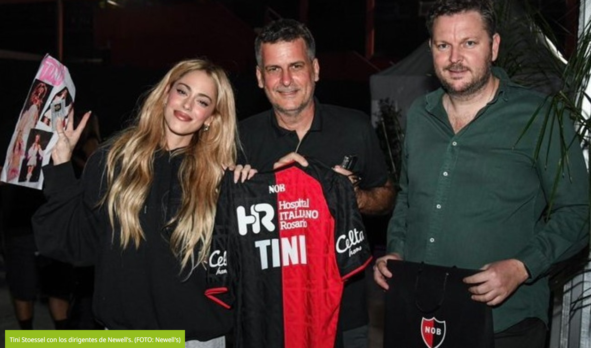

La famosa cantante se hizo presente en Rosario para dar un show y fue reconocida por la Lepra con una camiseta y una mención de honor. Mirá la foto.
Tras haber vencido 3-2 a Unión en la fecha 15 del Torneo Apertura, Newell's distinguió a Tini Stoessel, artista que se hizo presente en la ciudad de Rosario para tocar en el Parque de la Independencia en el marco de una gira musical.
Tal como explicó la propia institución en sus redes sociales, las autoridades le regalaron una casaca a la cantante, a quien reconocieron como una invitada de honor. " Ignacio Boero y Juan Manuel Medina, en representación del club, hicieron entrega de una camiseta", aseguraron.
El presente de Newell's en el Torneo Apertura
Sobre la recta final del Torneo Apertura, Newell's (que inició la campaña en zona de descenso) mejoró su rendimiento, pero no le alcanzó para meterse entre los ocho mejores. Hasta el momento, la Lepra sumó tres victorias, cuatro empates y siete derrotas. Por lo tanto, marcha 13° en el Grupo A con 13 puntos en su haber.